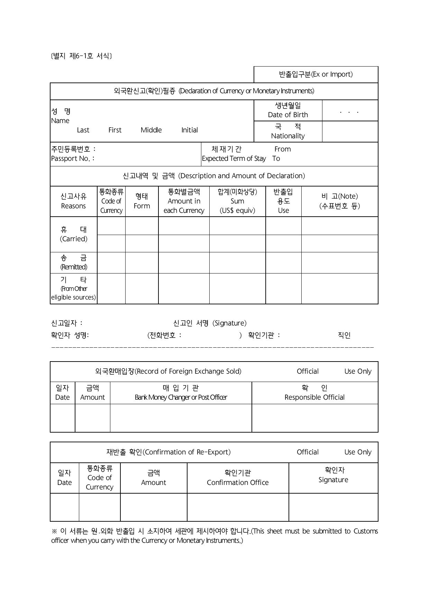

현금이 있으면 지갑이 든든!
미리 신고해야 진짜로 든든!
외국환신고필증이란?
입국과 출국 시 가진 외화가 일정 금액을 초과했을 때 금액을 신고하고 받을 수 있는 증명서에요.
-
해외여행 경비도 신고를 해야하나요?
네, 해외여행 경비로 $ 10,000 (USD)를 초과하는 현금을 가지고 출국할 경우, 반드시 세관에 신고하고 외국환신고필증을 발급받아야 해요.
이 경우에는 은행에서 외국환신고필증을 발급받아 출국하세요국민인 거주자와 재외동포
- $ 10,000 (USD)를 초과하는 해외유학경비, 해외체제비, 재외동포의 국내 재산 반출 및 해외이주비
- $ 10,000 (USD)를 초과하는 여행업자의 단체 해외여행경비 반출
- $ 10,000 (USD)를 초과하는 교육기관 등의 단체 해외연수경비 반출
-
외국환신고필증을 발급받지 않으면 어떻게 되나요?
일정한 금액을 초과하도고 세관 또는 은행에 신고하지 않았다가 적발이 되면 소지하고 있는 전체 금액의 5%에 해당하는 과태료를 부과해요.
-
외국환신고필증 예시 보기
